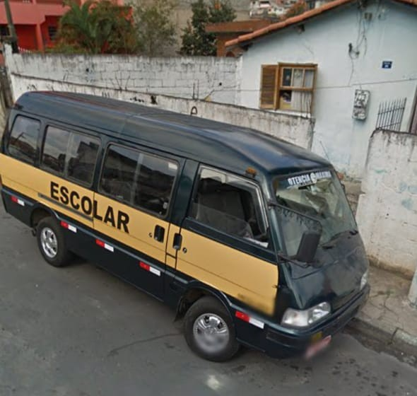
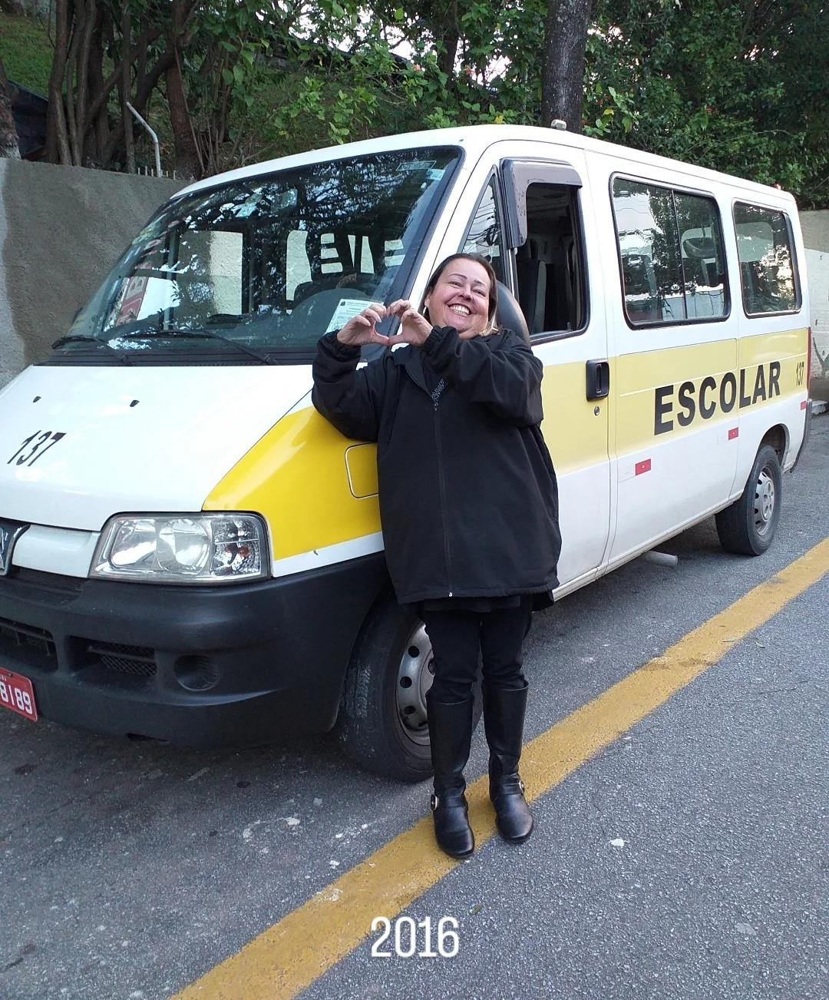
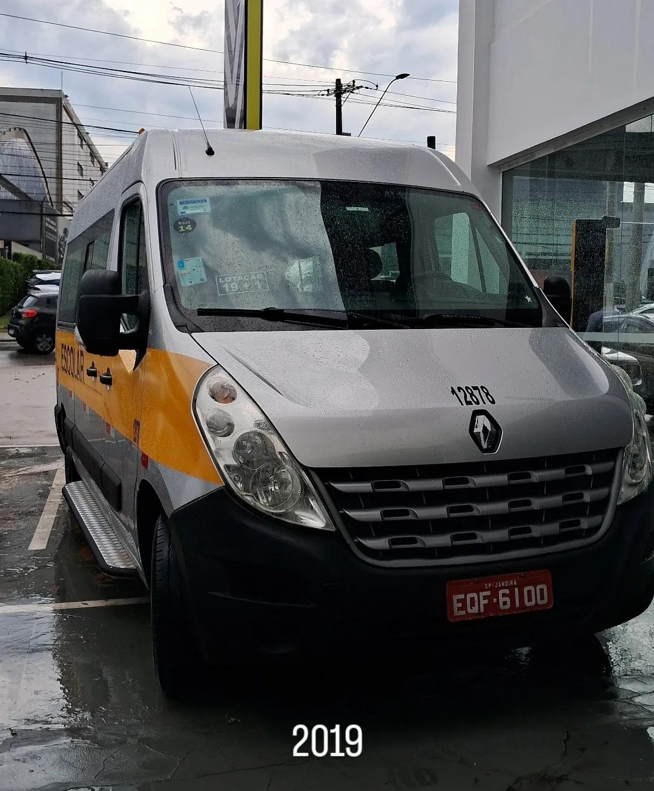
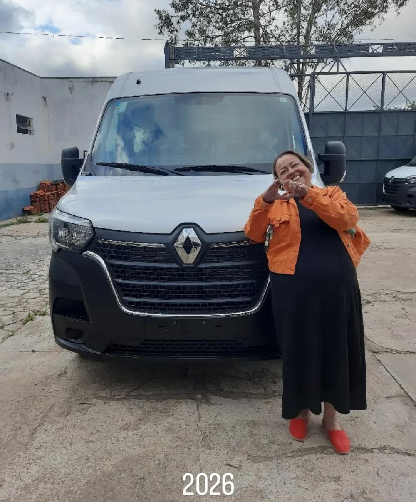

Van PVTia Patrícia e Tio Vitor
Cartão de embarqueNº 2027-JDR
OrigemJDRJandira e Barueri
DestinoCDDFundação Bradesco
Turma2027
HoráriosManhã e tarde
TrajetoIda e volta
Jandira · Barueri · Osasco
Desde 2013 levando a turma de Jandira e Barueri até a Fundação Bradesco, todos os dias de aula.
Ver a rotaVer a rota
2013TopicOnde tudo começou
2015Boxer 2010A primeira van mais nova
2019Master 2019A van cresceu
2026Master 2026A van nova, pronta para 2027Aviso aos passageiros
Atenção, famílias de Jandira e Barueri: desde 2013 a Tia Patrícia busca a turma na porta de casa e leva até a Fundação Bradesco, ida e volta. Embarque aberto para a turma de 2027.
Van Escolar Tia Patrícia e Tio Vitor
Buscamos a turma em casa, em Jandira e Barueri, e levamos até a Fundação Bradesco, na Cidade de Deus, em Osasco. Ida e volta, todos os dias de aula.
Turmas
Segurança
Van vistoriada pelas prefeituras de Jandira e Osasco. Revisão e manutenção feitas com frequência, para levar suas crianças com segurança.
Da porta de casa até a saída da escola, sempre tem alguém de olho na turma.
Na van
Na escola
Presente de boas-vindas
20% de desconto na 1ª mensalidade
Para novas crianças que começam na van em janeiro de 2027: a primeira mensalidade sai com 20% de desconto. Válido só para novos contratos, até 15/01/2027. Toque no botão: o bilhete e a mensagem vão juntos para o WhatsApp da Tia Patrícia.
Prefere só a mensagem? Chamar no WhatsAppFicou alguma dúvida que não está aqui? Chama no WhatsApp que a gente responde.
Buscamos em casa em Jandira e Barueri, nos bairros que estão na Rota, e levamos até a Fundação Bradesco, na Cidade de Deus, em Osasco. Se o seu bairro não está na lista, chama no WhatsApp que a gente vê se dá para atender.
Sim, as duas. Ida e volta, todos os dias de aula.
Pode. O caminho até a Fundação é um pouco longo, então a criança pode comer na van. É só mandar a lancheira.
Nossos monitores buscam as crianças dentro da escola. A turma espera numa fila própria, com a placa da Tia Patrícia, e usa o colete verde-água da van para não se misturar com os outros transportes.
Sim. A van é vistoriada pelas prefeituras de Jandira e Osasco, e a revisão e a manutenção são feitas com frequência.
Para novas crianças que começam em janeiro de 2027, a primeira mensalidade sai com 20% de desconto. Vale só para contratos novos e até 15/01/2027. É só tocar em “Enviar bilhete no WhatsApp” na seção do vale: o bilhete e a mensagem vão juntos.
Avise com antecedência pelo WhatsApp, inclusive quando for atestado médico. Assim a van não espera à toa e a rota não atrasa para as outras crianças.
Tem. O contrato é de 12 meses, de janeiro a dezembro, e as mensalidades dos meses de férias (janeiro e julho) também são pagas, porque a vaga da criança fica reservada o ano todo. O pagamento é em dinheiro ou Pix.
A van tem lugar para 23 crianças. Por isso as vagas por turma são limitadas: se tiver interesse, vale fazer o pré-cadastro logo.
Preenche aqui e a gente responde no WhatsApp se tem vaga na turma e no bairro. Temos turmas de manhã e de tarde.
Abrindo o WhatsApp…